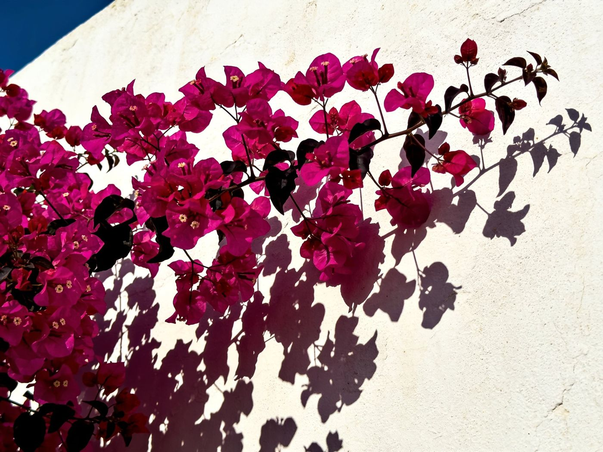
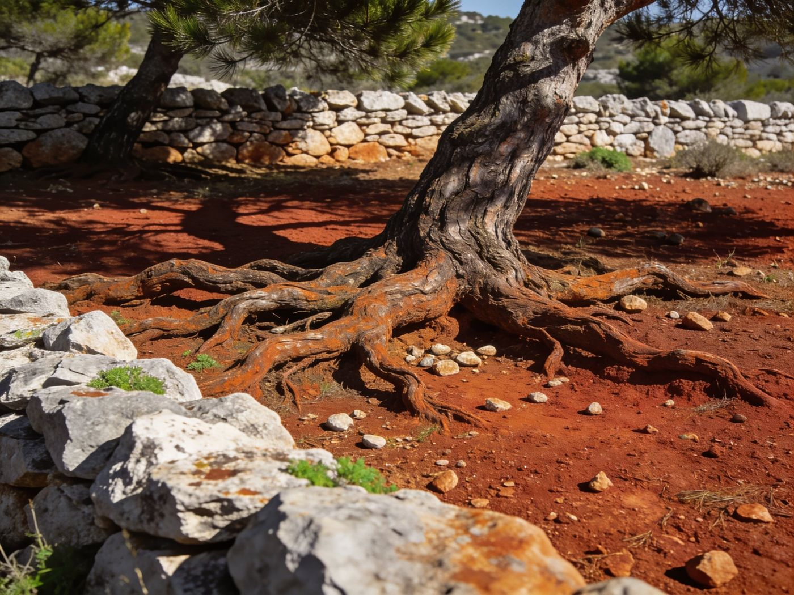
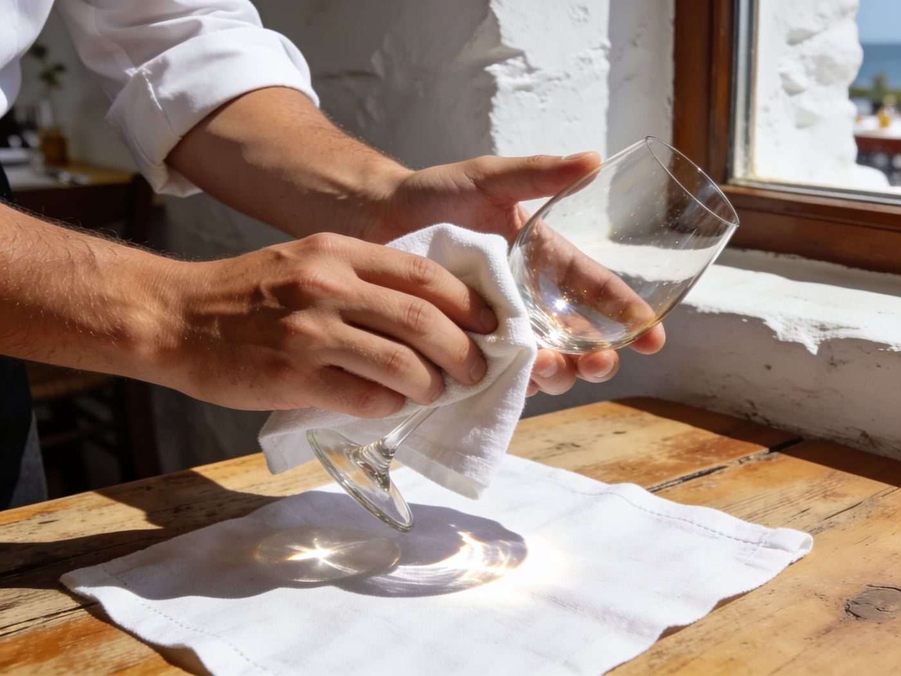
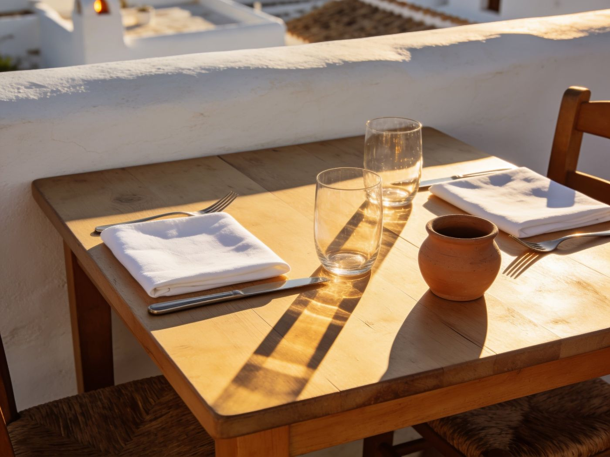
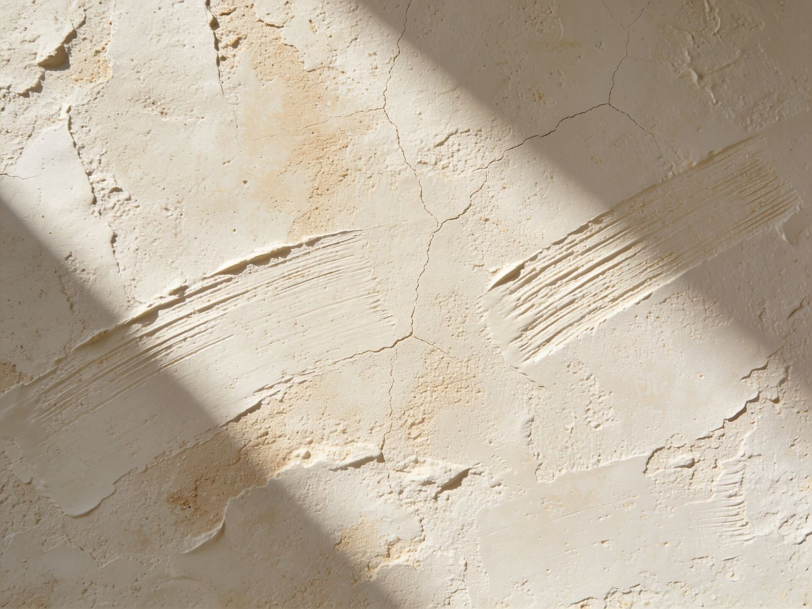

01
Il mondo visivo
Sei immagini generate per fissare l'atmosfera. Nessun volto, nessuna spiaggia, nessun turchese da agenzia di viaggi: superfici, materia e la luce che taglia. È il registro di chi lavora sull'isola, non di chi ci va in vacanza.





